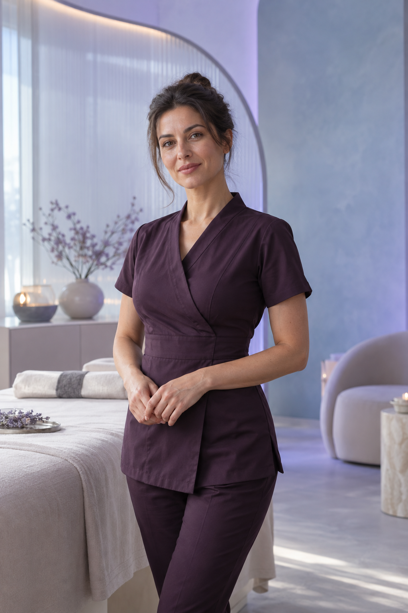
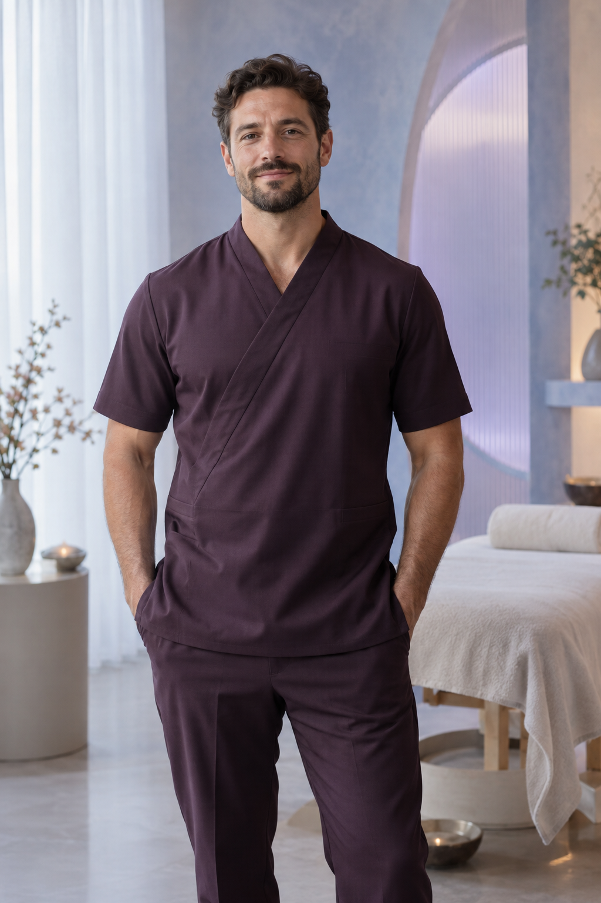
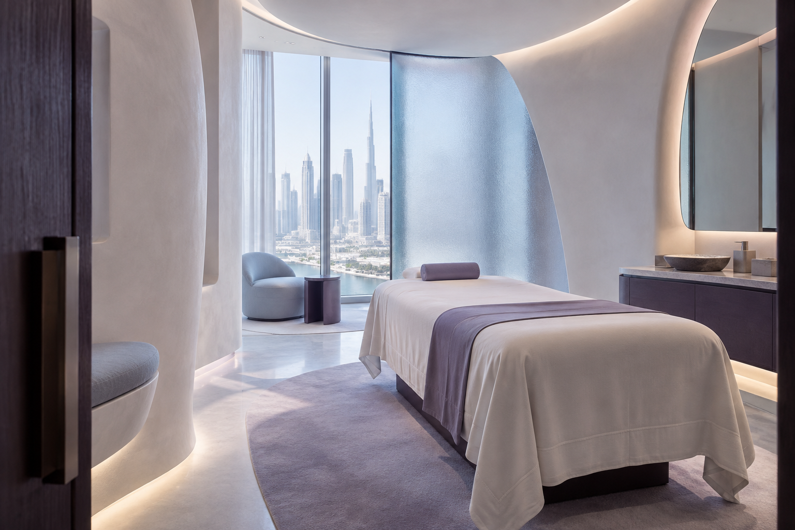
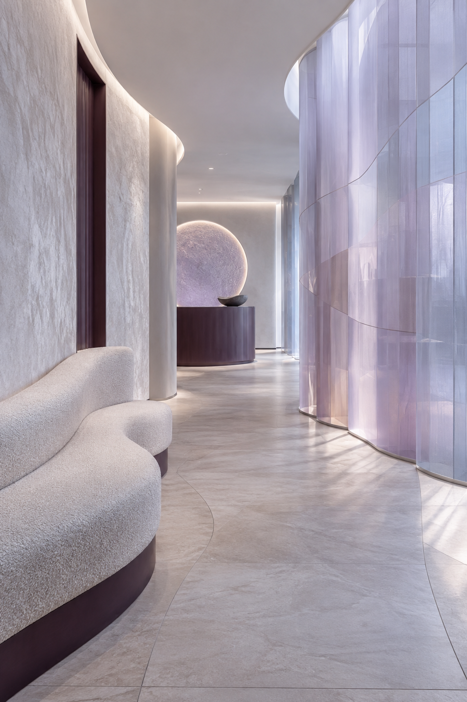

01 / BODY RESET↗
Массаж спины
Точечная забота о зоне, где чаще всего накапливается напряжение.

Мягкая, внимательная работа с телом. Подбираем подход к вашему состоянию, ритму жизни и цели визита.
Точечная забота о зоне, где чаще всего накапливается напряжение.
Время замедлиться и восстановить ощущение лёгкости.
Помогаем телу вернуться к движению после нагрузки.
Мы видим тело как живую систему. Важны не только мышцы и движение, но и ваше ощущение себя после сеанса.
Начинаем с вашего состояния и запроса.
Адаптируем интенсивность и фокус сеанса.
Продумываем каждое касание и деталь визита.
Специалисты The Body Mechanic работают с вниманием к вашему запросу, границам и комфорту.

Каждое тело
говорит на своём
языке. Мы умеем
его слышать.

Самое ценное для нас — когда человек снова чувствует контакт со своим телом.
После сеанса появилась та самая лёгкость, которую я давно искала. Всё было очень внимательно и спокойно.
Чувствуется индивидуальный подход, а не готовая схема.
ГОСТЬ СТУДИИВнимание к деталям создаёт совсем другое ощущение от массажа.
ГОСТЬ СТУДИИПриватность, мягкий свет и продуманная тишина помогают оставить город за дверью.


Если вашего вопроса здесь нет, напишите нам — ответим лично.
Задать вопрос ↗Расскажите нам о своём состоянии и цели визита. Мы поможем выбрать комфортный формат сеанса.
Специальная подготовка не нужна. Приходите в удобной одежде и сообщите специалисту о том, что важно учесть.
Да. Свяжитесь с нами заранее, и мы предложим другое доступное время.
Опишите их до визита и обсудите со специалистом. Это поможет подобрать подходящий формат работы.
Расскажите, как вы себя чувствуете. Мы свяжемся с вами и подберём удобное время для визита.
THE BODY MECHANIC · DUBAI